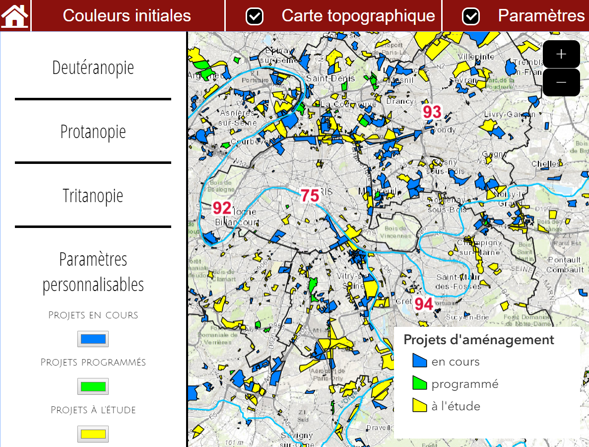
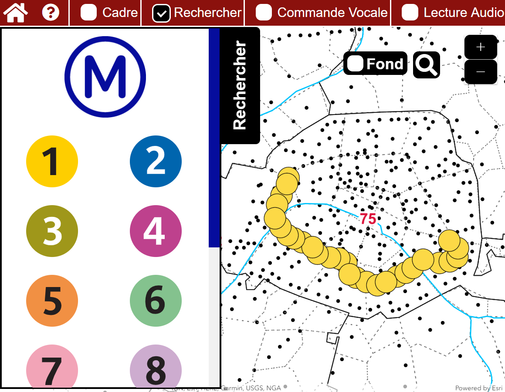

Ce projet de cartographie pour les personnes daltoniennes et malvoyantes est commandité par l'Institut d'Aménagement et d'Urbanisme de la région Ile-de-France (IAU). Chaque année, l’IAU travaille sur un « sujet d’atelier ». Cette année, le thème porte sur le « Changement de regard – Changement de perspective ». Le projet mené s’inscrit dans ce thème et porte sur l’accessibilité de la cartographie.
Nous avons utilisé des données provenant de l'IAU, de DataGouv et de l'Ile-de-France Mobilités.